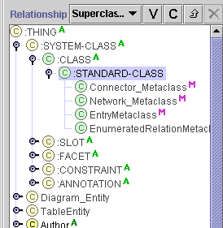
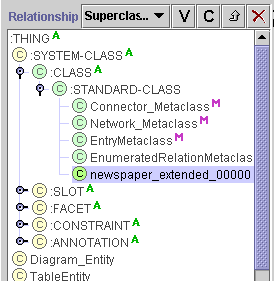

Creating a
Metaclass
Creating a
Metaclass

Despite the power of metaclasses, their basic interface is
very simple. Creating a metaclass is almost identical to creating a class. You
simply have to make sure the class is created subordinate to :CLASS. Every
metaclass is subordinate to :CLASS. by default, every class subordinate to :CLASS is a
metaclass, unless you change it. Frequently, it is desirable to create a metaclass subordinate to
:STANDARD-CLASS, so that the classes created using the metaclass will have the
various properties defined by the :STANDARD-CLASS slots. Without these
properties, you cannot name the class or add template slots.
To create a new class as a metaclass:
- Click on the desired superclass in the Class Relationship pane. The
selected superclass must itself be a metaclass, as indicated by a green
class icon .
As mentioned above, this will be true only if the selected superclass
is subordinate to :CLASS.

- Click the C(reate)
 button at the right of the Class Relationship Pane. The new class will be
added under the highlighted class. A green class
icon will indicate that it is a metaclass. It will inherit the properties of the selected
metaclass, including any template slots.
button at the right of the Class Relationship Pane. The new class will be
added under the highlighted class. A green class
icon will indicate that it is a metaclass. It will inherit the properties of the selected
metaclass, including any template slots.

- Use the Class Form to name the class, create constraints, and create and edit
slots.
Next: Creating a Class Using a Metaclass
Classes Table of Contents